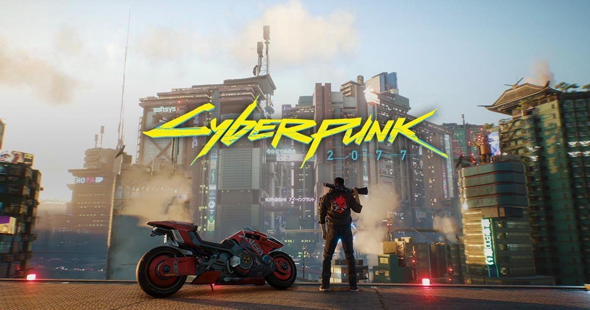
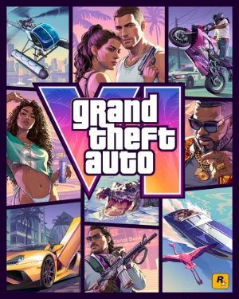
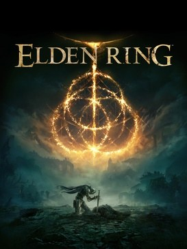

RPG d'action en monde ouvertCyberpunk 2077
CD Projekt RED · PC, PS5, Xbox Series, Switch 2
Night City, ses gangs, ses fixers et ses implants : toutes les missions, tous les contrats et l'extension, sans rien laisser derrière toi.
Interligne
Espacement des lettres
Police
Action-aventure en monde ouvert · 2026
L'État de Leonida de bout en bout : les 5 chapitres de Jason et Lucia, les 5 fins et ce qu'il faut préparer pour la meilleure, puis Vice City, les 39 opérations de gang et les 34 compteurs du 100 %.

Calculé à partir des cases que tu as cochées dans le guide, sur cet appareil.
Clique sur une partie pour l'ouvrir directement dans le guide. Les compteurs suivent les cases que tu coches.

RPG d'action en monde ouvertCD Projekt RED · PC, PS5, Xbox Series, Switch 2
Night City, ses gangs, ses fixers et ses implants : toutes les missions, tous les contrats et l'extension, sans rien laisser derrière toi.

Souls-like en monde ouvertFromSoftware · PC, PS5, PS4, Xbox Series, Xbox One, Switch 2 (Tarnished Edition)
L'Entre-Terre région par région, puis le Royaume des Ombres : sites de grâce, quêtes de PNJ, boss et trésors.
 RPG d'action en monde ouvert
RPG d'action en monde ouvert
Square Enix · PS5, PC, Switch 2, Xbox Series
Région par région : quêtes annexes, mini-jeux, Matérias et tout ce qu'il faut pour le 100 %.